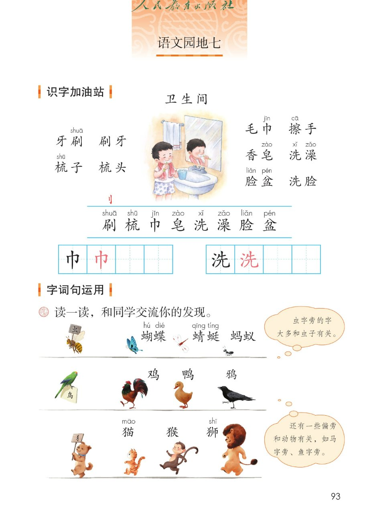
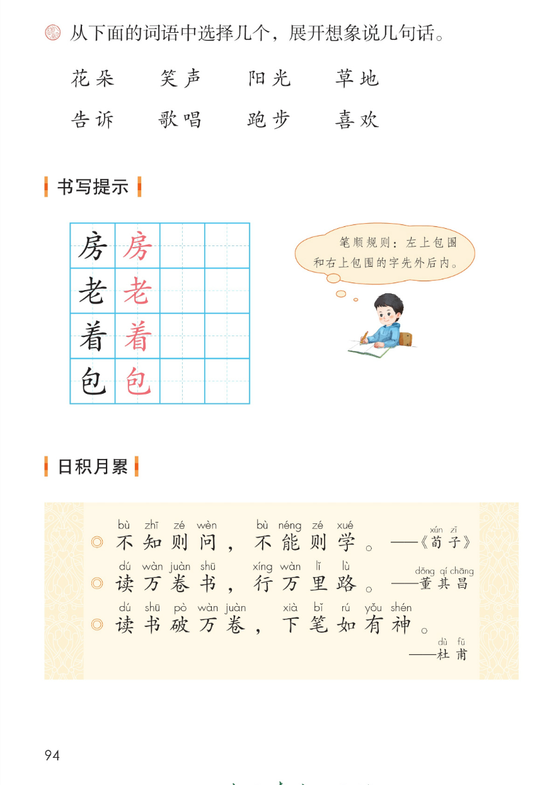
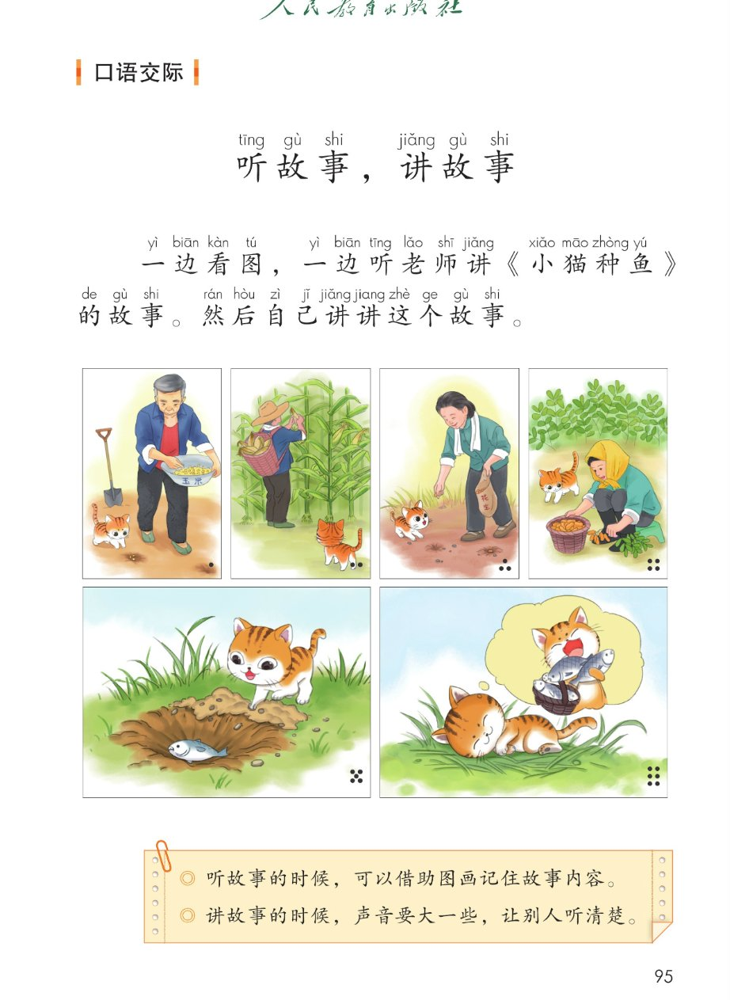
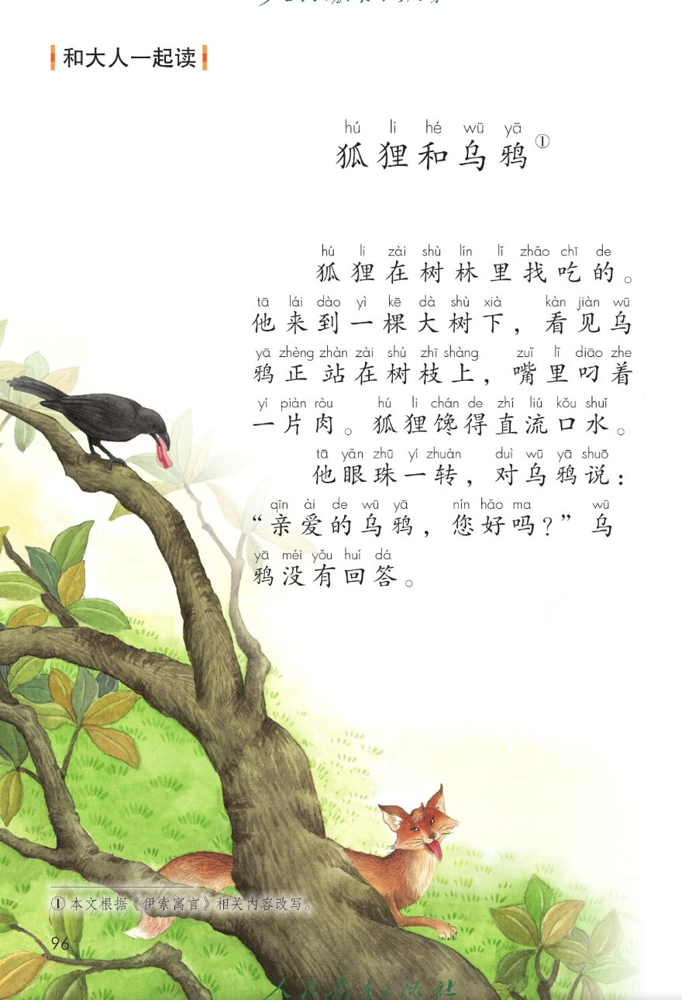
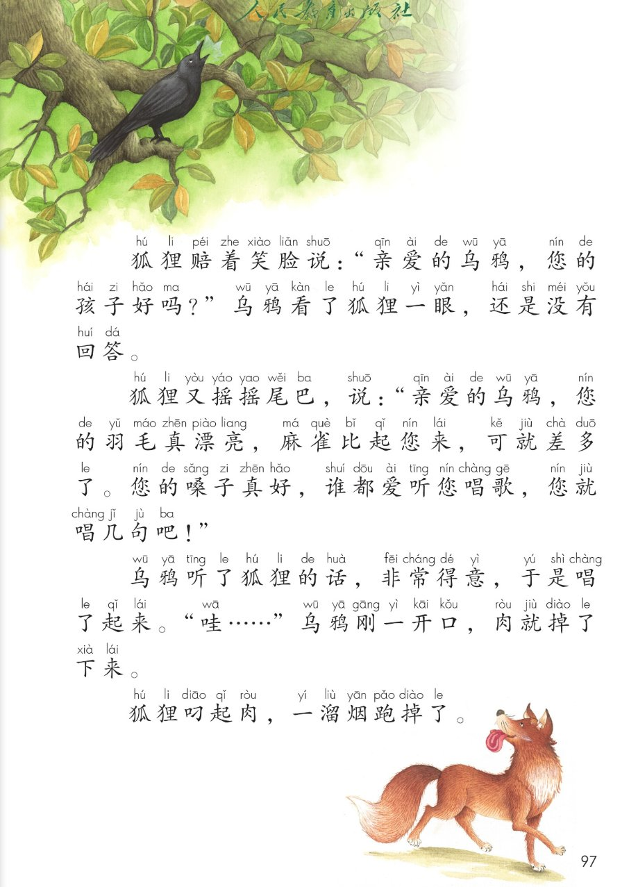

统编版 · 一年级下册 · 第七单元 · 语文园地七
语文园地七
识字加油站 · 字词句运用 · 书写提示
日积月累 · 口语交际 · 和大人一起读 狐狸和乌鸦
六块活动点读听一听拼音可开关课本原页放大
这一页把语文园地七整块搬了上来：先认卫生间里的 10 个词语，发现偏旁相同的字意思也归在一类；再用 8 个词语展开想象说几句话，练一练「先外后内」的笔顺；接着积累 3 句读书名言；然后看图听《小猫种鱼》、讲故事；最后和大人一起读《狐狸和乌鸦》——乌鸦一开口，嘴里的肉就掉了下来。🦊
① 识字加油站 · 卫生间里的事物 课本第 93 页 10 词语 / 识字条 8 字 / 田字格 2 字
课本插图标题（照录）卫生间
词语里生字上方的注音照录课本（刷 shuā / 梳 shū / 巾 jīn / 擦 cā / 皂 zào / 洗 xǐ / 澡 zǎo / 脸 liǎn / 盆 pén）；「擦」在词语里注音但不在识字条 8 字内，照录不删。识字条左上方课本印有一个红色偏旁「刂」（见原页），此处一并照录说明。拼音只作显示，不进朗读稿。
识字条（课本第 93 页蓝色横线之间，8 字照录）：
田字格练写（课本第 93 页：左表 巾、右表 洗，各带一个红色范字，照录）：
读一读，你发现了什么（配套提示，供参考）：左边四个词是「东西 + 用它做什么」：牙刷—刷牙、梳子—梳头；右边六个词也是一对一对的：毛巾—擦手、香皂—洗澡、脸盆—洗脸。🌈 归类与解说为配套内容，原文以课本原页为准。
② 字词句运用 · 偏旁归类 / 选词说话 / 书写提示 课本第 93~94 页 三行偏旁 / 8 词 / 4 字
课本题目（照录）读一读，和同学交流你的发现。
课本第 93 页橙色气泡（照录）虫字旁的字大多和虫子有关。
课本第 93 页橙色气泡（照录）还有一些偏旁和动物有关，如马字旁、鱼字旁。
和同学交流你的发现（配套归类提示，供参考）：第一行举的是「虫」，第二行举的是「鸟」，第三行举的是「犭」；同一行的字偏旁相同，意思也归在一类。课本气泡还提醒：马字旁、鱼字旁的字也和动物有关。🌈 归类解说为配套内容，以教材和字典为准。
课本第 94 页题目（照录）从下面的词语中选择几个，展开想象说几句话。
我也会选几个词说几句（配套说话支架，供参考，答案不唯一）：示例一：阳光照在草地上，花朵开了，远处传来小朋友的笑声。示例二：我喜欢在草地上跑步，还想告诉你一件有趣的事。🌈 示例句为配套练习设计，课本只给词语、不印答案，答案不唯一，以教材为准。
书写提示 · 课本第 94 页田字格（4 字照录，各带一个红色范字）：
课本气泡（照录）笔顺规则：左上包围和右上包围的字先外后内。
写字小提醒（配套提示，供参考）：「房、老」是左上包围，「包」是右上包围，按课本气泡说的「先外后内」写；「着」也照着范字一笔一笔描。🌈 笔顺提示为配套内容，以教材和字典为准。
三行举牌偏旁「虫 / 鸟 / 犭」与词语里的单字拼音（hú dié / qīng tíng / māo / shī）均照录课本，只作可见 ruby，不进朗读稿；两处橙色气泡、笔顺气泡与题目文字逐字照录。
③ 日积月累 · 读书与求学的三句话 课本第 94 页 3 句 · 逐句点读
不知则问，不能则学。 ——《荀子》
bù zhī zé wèn bù néng zé xué
作者小字注音（照录）：xún zǐ
课本日积月累 · 照录
读万卷书，行万里路。 ——董其昌
dú wàn juàn shū xíng wàn lǐ lù
作者小字注音（照录）：dǒng qí chāng
课本日积月累 · 照录
读书破万卷，下笔如有神。 ——杜甫
dú shū pò wàn juàn xià bǐ rú yǒu shén
作者小字注音（照录）：dù fǔ
课本日积月累 · 照录
三句话在说什么（配套解说，供参考）：第一句说不懂就问、不会就学；第二句说既要读书，也要行路；第三句说书读得多，下笔就顺。三句都和读书求学有关，句子短、好记。🌈 意思解说为配套内容，以教材和字典为准。
拼音照录课本：第一句「不知则问 / 不能则学」上方注 bù zhī zé wèn / bù néng zé xué，右上角《荀子》注 xún zǐ；第二句作者「董其昌」注 dǒng qí chāng；第三句作者「杜甫」注 dù fǔ。拼音只作显示，不进朗读稿；破折号、书名号与作者名逐字照录。
④ 口语交际 · 听故事，讲故事 课本第 95 页 《小猫种鱼》六幅图 · 两条提示
活动标题（照录）听故事，讲故事
tīng gù shi jiǎng gù shi
课本题目（照录）一边看图，一边听老师讲《小猫种鱼》的故事。然后自己讲讲这个故事。
课本题目上方拼音（照录）：yì biān kàn tú yì biān tīng lǎo shī jiǎng xiǎo māo zhòng yú de gù shi rán hòu zì jǐ jiǎng jiang zhè ge gù shi
下面六张卡只标课本插图的顺序（配套标签，供参考）：课本这六幅图没有配文字，此处不编造图意，请对照下方课本原页按顺序看图、听故事、再讲故事。
课本第 95 页提示框（照录）◎ 听故事的时候，可以借助图画记住故事内容。
课本第 95 页提示框（照录）◎ 讲故事的时候，声音要大一些，让别人听清楚。
怎么听、怎么讲（配套练习设计，供参考，答案不唯一）：① 一边看图一边听，记住先发生了什么、后来又发生了什么；② 自己讲的时候按六幅图的顺序说，声音大一些；③ 讲完请同学说一说：哪一幅图最有意思？🌈 课本只给图与两条提示，以教材为准。
题目里「小猫种鱼」带书名号，朗读稿去掉书名号便于听读；题目上方拼音照录课本（「故事」注轻声 shi、「讲讲」后一个字注轻声 jiang、「一边」的「一」注变调 yì），未改成 shì / jiǎng / yī。
⑤ 和大人一起读 · 狐狸和乌鸦 课本第 96~97 页 7 段 · 点一段读一段
课题（照录，右上带题号 ①）
狐狸和乌鸦①
课题上方拼音（照录）：hú li hé wū yā
课本第 96 页（配套分节，供参考）
狐狸在树林里找吃的。
他来到一棵大树下，看见乌鸦正站在树枝上，嘴里叼着一片肉。狐狸馋得直流口水。
他眼珠一转，对乌鸦说：“亲爱的乌鸦，您好吗？”乌鸦没有回答。
课本第 97 页（配套分节，供参考）
狐狸赔着笑脸说：“亲爱的乌鸦，您的孩子好吗？”乌鸦看了狐狸一眼，还是没有回答。
狐狸又摇摇尾巴，说：“亲爱的乌鸦，您的羽毛真漂亮，麻雀比起您来，可就差多了。您的嗓子真好，谁都爱听您唱歌，您就唱几句吧！”
乌鸦听了狐狸的话，非常得意，于是唱了起来。“哇……”乌鸦刚一开口，肉就掉了下来。
狐狸叼起肉，一溜烟跑掉了。
课本页脚注释（照录）：① 本文根据《伊索寓言》相关内容改写。
和大人一起说一说（配套练习设计，供参考，答案不唯一）：① 狐狸一共夸了乌鸦几次？先问什么，后来又夸了什么？② 前两次乌鸦都没有回答，第三次为什么开口了？③ 肉是怎么掉下来的？最后谁把肉叼走了？④ 和大人一人读一段，读狐狸的话时想想它心里在打什么主意。🌈 说得清楚就对，原文以课本原页为准。
课本为这篇短文全文逐字注音（拼音见下方课本原页）；此处沿用园地三、园地五、园地六的做法，只呈现汉字原文，不擅自补配注音。课题「狐狸」的「狸」课本注轻声 li，照录不改成 lí。第 97 页「哇……」的省略号、对话里的中文引号都只留在可见文字，朗读稿去掉引号并把「哇……」改说成「哇，」，便于听读。分节标签为配套划分，原文以课本原页为准。
课本原页 · 第 93~97 页
点图放大

第 93 页 · 识字加油站（卫生间 10 词语 / 识字条 / 田字格）· 字词句运用 偏旁归类

第 94 页 · 选词说话 8 词 / 书写提示 4 字与笔顺气泡 / 日积月累 三句名言

第 95 页 · 口语交际 听故事，讲故事《小猫种鱼》六幅图与两条提示

第 96 页 · 和大人一起读 狐狸和乌鸦（前三段，含页脚注释①）

第 97 页 · 狐狸和乌鸦（末四段）· 肉掉下来，狐狸一溜烟跑掉了
教材原页截图照录；页面里的提示、分组与练习设计为配套内容，不冒充教材原文。